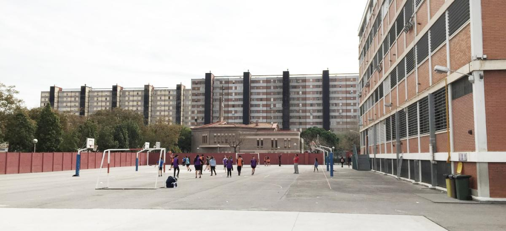

Mi interes en la informática empieza por mi fascinación por la tecnologia. En algun momento de mi etapa infantil me pregunte como funcionan los telefonos moviles, paginas como amazon o como son capaçes los equipos informáticos de ejecutar videojuegos.
Gracias a mi interes por la nueva tecnologia empecé a planear mi futuro como programador. Por ello me inscribí en Jesuïtes Educació:
Durante este año tocaremos PHP junto con su framework Laravel para realizar querys con MySQL. También, profundizaremos en realizar paginas responsive con HTML, CSS y BootStrap.
Y finalmente utilizaremos javascript para añadirle más funcionalidades a nuestras páginas para que sean mas dinámicas.
Durante este curso hicimos varios proyectos que nos obligaban a trabajar en equipo y entender como se relacionan los equipos entre sí. Un servidor de bases de datos con un servidor web, servidor de correos... También, como monitorizarlos y gestionar los recursos de los equipos.
Durante el curso nos enseñaron las bases y conceptos de varios softwares (código abierto) y S.O (Windows y Linux) que posteriormente utilizarariamos, como por ejemplo: Paquete Office, Photoshop, VirtualBox, PostMan, XAMPP...
A lo largo de mi estancia en jesuïtes he realizado 2 practicas, la primera fue para una empresa de telecomunicacionés y la otra, mas reciente, es una escuela.
La primera vez que llegue al colegio me enseñaron donde se encontraban cada aula de los diferentes años (Infantil, Primaria, ESO...). Posteriormente, fui solucionando incidencias en diferentes aulas, realizando instalaciones desatendidas, organizando el almacén, marcando viejos equipos...
La primera tarea que hice al empezar las prácticas fue instalar e inventariar nuevos equipos que habian llegado.
Más tarde fui organizando el inventario y solucionando incidencias de las teleoperadoras mientras iba arreglando algunos equipos e instalando nuevas conexiones en el CPD.
Actualmente, estoy cursando DAW (desarrollo de aplicaciones web), agradecería que los correos que me lleguen fueran de empresas que acepten contrato de prácticas.
Si quereis contactarme enviadme un correo a mi cuenta y se lo comunicaré a mi tutor.